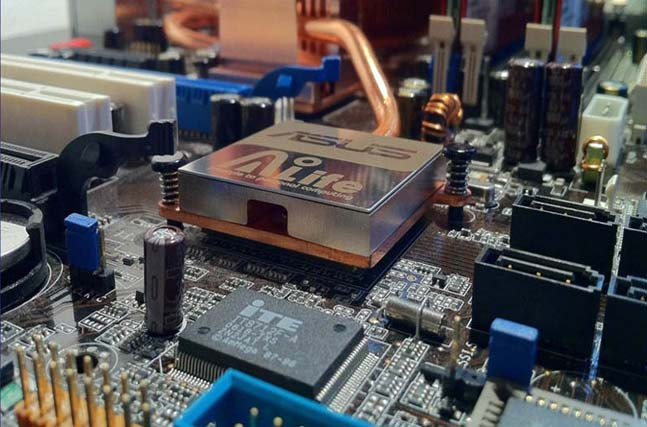
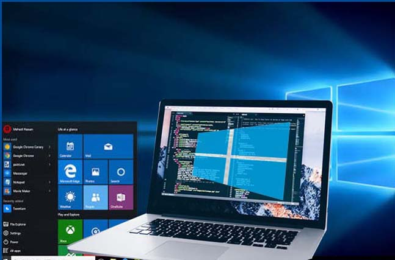
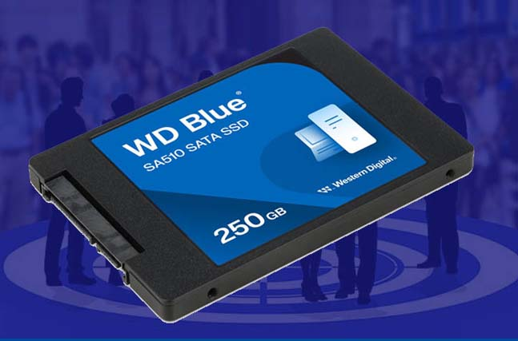
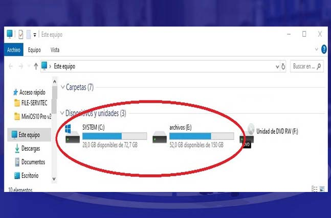
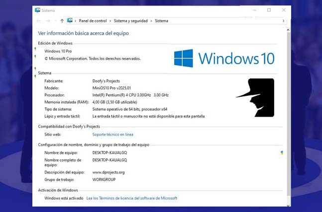
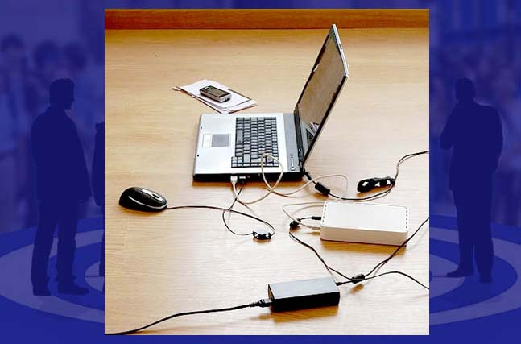
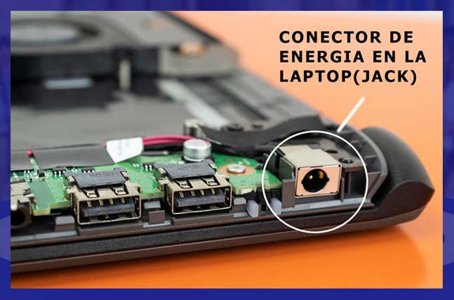

AI Website Maker
Este es el proceso total de la instalación de un sistema operativo
Lo que hay que ver al principio es el contenido de los discos duros
Generalmente el usuario tiene información de interés, el cual hay que trasladarlo a un medio externo en el mejor de los casos, pero si es mucha la información, talvez es conveniente trasladarlo a una segunda o tercera partición.

Este proceso es un tiempo adicional, al servicio de instalación del sistema operativo.
Una vez realizado este proceso se inicia con la instalación del sistema operativo elegido.
Actualmente este proceso se puede realizar desde un flash memory, pero también de acuerdo a la versión del S.O., se puede realizar desde un disco DVD.

En la mayoría de los casos no se necesita formatear todo el disco.
En una instalación normal solo se formatea la primera partición o disco C, las otras particiones pudiendo ser más de una, pueden contener información del usuario.
En algunos casos en donde se presente algún tipo de falla en la partición principal, se tiene que hacer un formateo de todo el disco, en este caso, se informa al propietario y se realiza la extracción de la información mas importante a otros medios externos.

El proceso en si consta de algunas configuraciones iniciales, para que se inicie el proceso, luego de un cierto tiempo como mínimo el sistema es copiado en la computadora, luego continua con una serie de configuraciones este proceso dura entre 35 a 40 minutos.
En la parte final de la instalación, se solicitan algunos datos del cliente y después de algunos minutos, ya se cuenta con el sistema operativo instalado en la computadora

Es necesario también activar la versión del sistema operativo, para que se pueda completar algunas configuraciones principales.
También se instala el anydesk, este programa permite hacer algunas instalaciones a través de internet.
Por ejemplo, si la instalación del sistema operativo se realiza en un lugar ajeno al domicilio del propietario, posteriormente a través de este programa se puede configurar e instalar adecuadamente la impresora del propietario,
Para instalar algunos programas y actualizar los controladores de la pc, se requiere contar con el servicio de internet.

En algunos casos no existe el wifi de banda ancha y se improvisa utilizando los datos de un celular, en este caso se tarda más en la instalación, ya que este servicio no es veloz y en muchos casos si no se cuenta con una cantidad mínima de 1 giga de datos (en el celular) , se puede entrecortar la descarga de archivos y por lo tanto en estos casos hay que repetir el procedimiento desde el principio.
No es recomendable este método, ya que se encarece el costo de la instalación, la cual tiene que ir por cuenta del propietario, pero si no hay otra solución hay que tomar esta alternativa.

Este servicio no involucra para nada modificar el hardware del equipo, ya que todo se hace mediante software, utilizando algún puerto USB o el lector de discos.
Hay que ver si el cargador esta conectado a la tensión 220 v.
Posiblemente el cargador tiene algún problema, se puede intentar probar con otro cargador.
Posiblemente el conector del cargador o de la laptop tiene problemas, debe llevar al servicio técnico.
La batería ya tiene problemas, la solución más práctica es cambiar de batería.
El sensor de la batería está dañado.
Posiblemente ya venía con algunas manchas pequeñas de fábrica y con el uso estas manchas van aumentado de tamaño.
Esto se debe a que en ese sector la pantalla ya está dañada,
Si tuvo algún daño físico su laptop, es posible que ya no tenga solución.
Existen varias causas para que esto ocurra, se recomienda llevarlo al servicio técnico para que detecte la falla y le ponga una solución.
Si, dependiendo de las características de la memoria, procesador y disco duro.
Si en un principio estaba bien, es posible que la instalación de algún programa, lo hayan dañado, pero puede solucionarse.
Las causas son variadas, hay que hacer una revisión por etapas.
No, la información puede extraerse a un medio externo en el peor de los casos
Y en el mejor de los casos solo se debe cambiar de partición.
Si, por ejemplo después de formatearlo, se pierden los programas, pero pueden reinstalarse otras versiones, por ejemplo el office, se pierde el programa, y al instalar otro sistema operativo se puede reinstalar todos los programas del office.
Se puede instalar un adaptador de wifi mediante u puerto USB.
Nube se lo llama al espacio físico dentro de una servidor (computadora) que se encuentra ubicado en algún lugar del mundo.
Si usted cuenta con un correo Gmail, tiene disponible 5 gigas de espacio para guardar sus archivos.
Si, este cambio se nota si antes su disco duro era mecánico, actualmente ya vienen los discos duros sólidos.
1.- Cambiar la pantalla.
2.- Se puede conectar una pantalla externa y lo puede utilizar su laptop como pc de escritorio.
Si, dependiendo del modelo y la capacidad máxima de memoria de su laptop.
No, son dispositivos diferentes.
En el disco duro se almacena información que aún permanece al apagar el equipo. en cambio, la memoria RAM se utiliza con los diferentes procesos que realizan cuando la pc está encendida.
De la velocidad del microprocesador. La cantidad de memoria RAM y el tipo de disco duro.
Si, lo más recomendable es dividir ese disco mediante software , el disco C es el principal , y hay que crear un segundo disco , donde se debe guardar la información generada por la laptop.
AI Website Maker